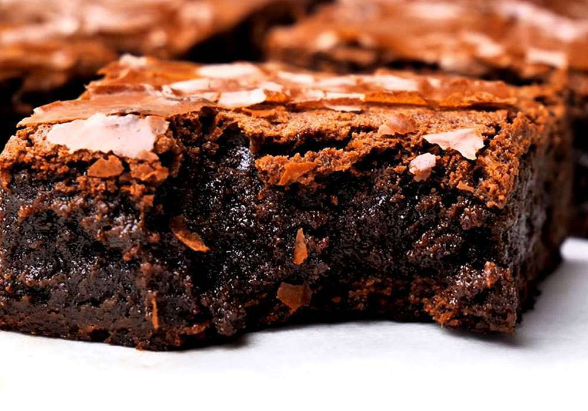
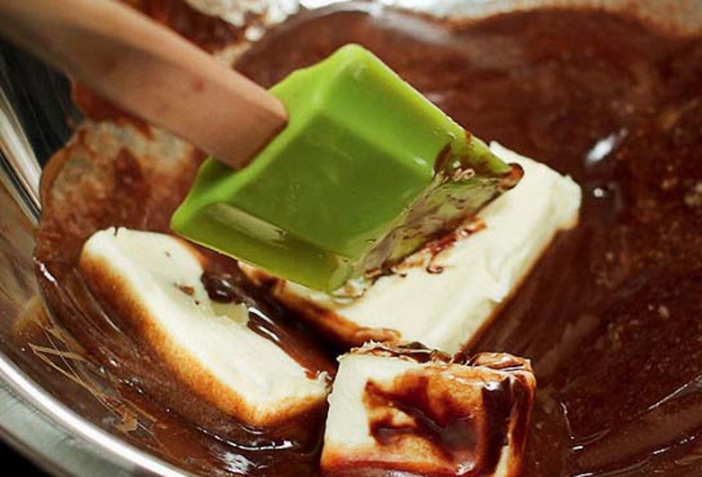
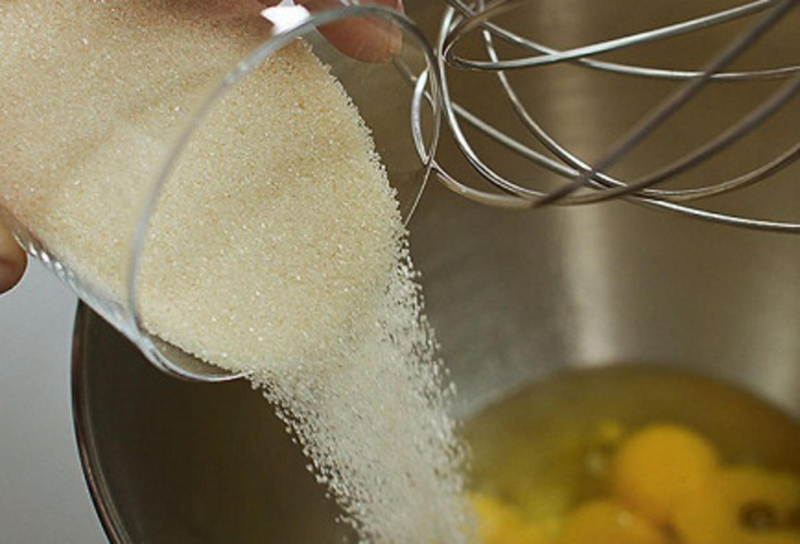
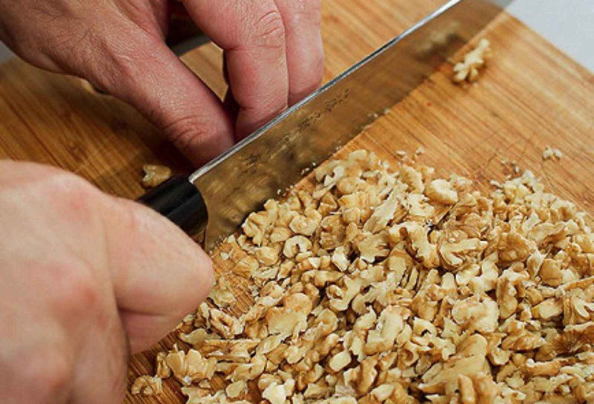
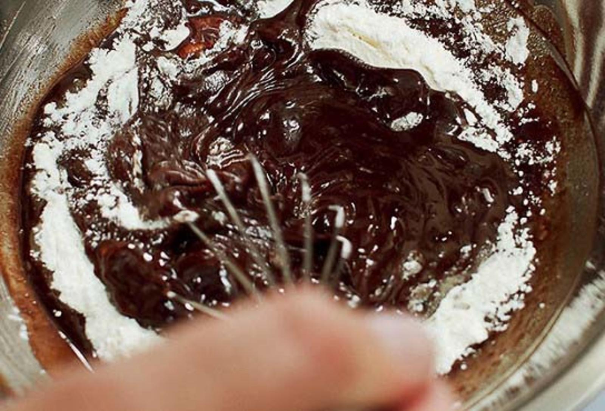
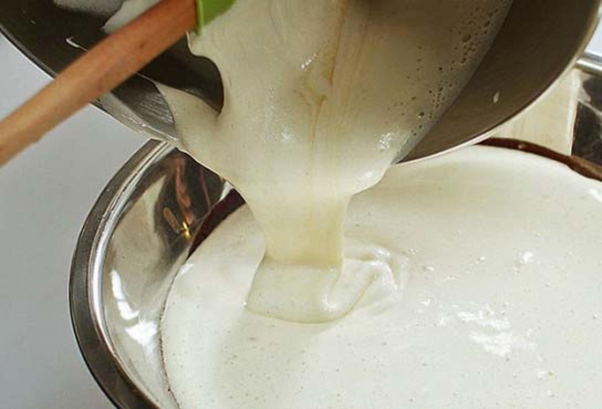
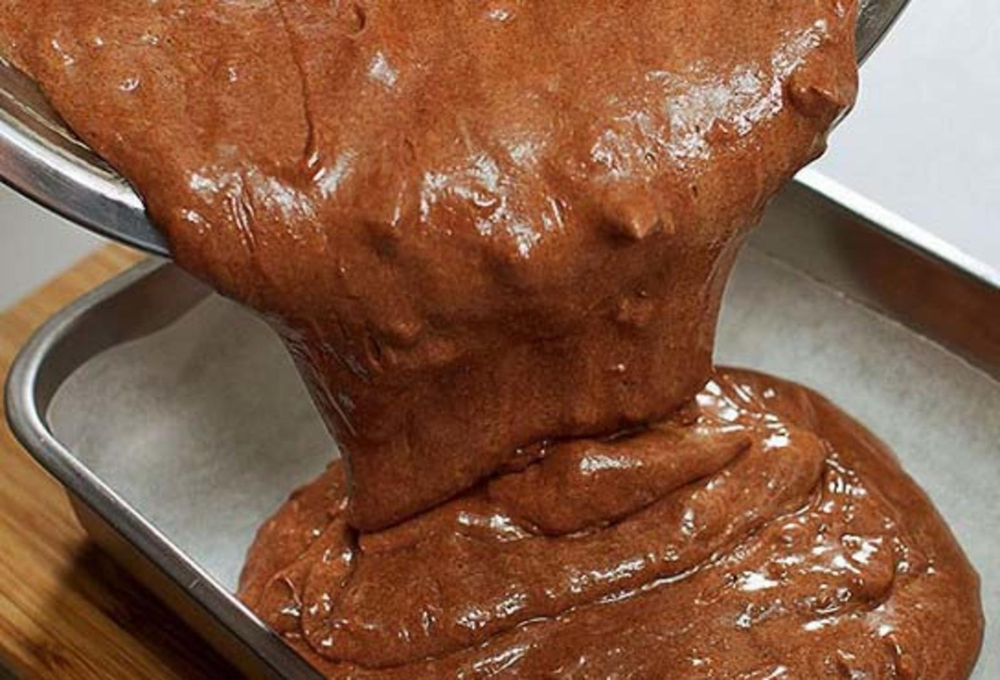
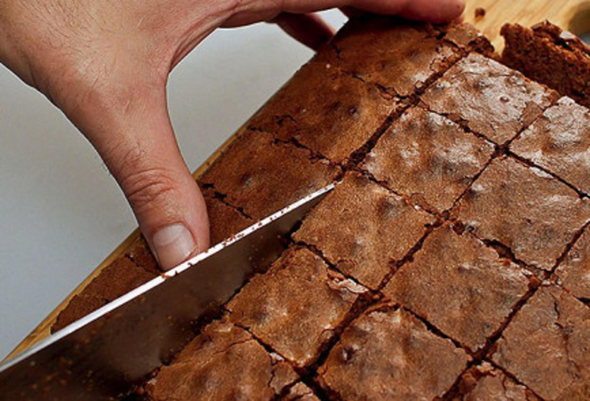
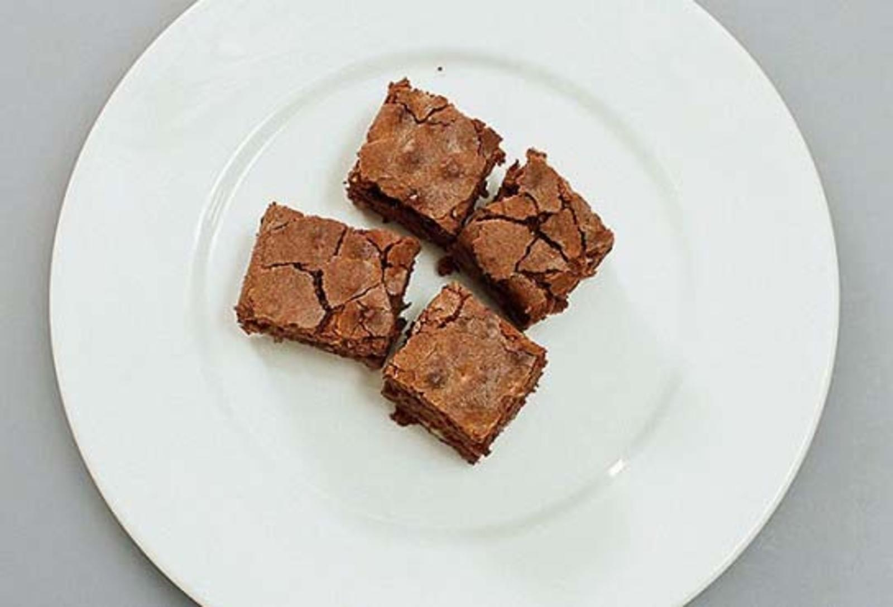

Брауни

Один из самых популярных десертов в мире — брауни — был придуман в 1893 году на кухне легендарного отеля Palmer House в Чикаго. Этот пирог там пекут до сих пор по оригинальному рецепту, покрывая сверху абрикосовой глазурью. В домашней версии, впрочем, у брауни получается такая изумительная сахарная корочка, что глазировать ее было бы преступлением. У традиционных шоколадных брауни ванильный аромат, хрустящая корочка и влажная серединка. В торт также добавляют грецкие орехи или фисташки, а еще клюкву.
Инструкция приготовления
1)Шоколад разломать на кусочки и вместе со сливочным маслом растопить на водяной бане, не переставая все время помешивать лопаткой или деревянной ложкой. Получившийся густой шоколадный соус снять с водяной бани и оставить остывать.

2)Тем временем смешать яйца со ста граммами коричневого сахара: яйца разбить в отдельную миску и взбить, постепенно добавляя сахар. Взбивать можно при помощи миксера или вручную — как больше нравится, — но не меньше двух с половиной-трех минут.

3)Острым ножом на разделочной доске порубить грецкие орехи. Предварительно их можно поджарить на сухой сковороде до появления аромата, но это необязательная опция.

4)В остывший растопленный со сливочным маслом шоколад аккуратно добавить оставшийся сахар, затем муку и измельченные орехи и все хорошо перемешать венчиком.

5)Затем влить сахарно-яичную смесь и тщательно смешать с шоколадной массой. Цвет у теста должен получиться равномерным, без разводов.

6)Разогреть духовку до 200 градусов. Дно небольшой глубокой огнеупорной формы выстелить листом бумаги для выпечки или калькой. Перелить тесто в форму. Поставить в духовку и выпекать двадцать пять — тридцать минут до появления сахарной корочки.

7)Готовый пирог вытащить из духовки, дать остыть и нарезать на квадратики острым ножом или ножом для пиццы — так кусочки получатся особенно ровными.

8)Подавать брауни можно просто так, а можно посыпать сверху сахарной пудрой или разложить квадратики по тарелкам и украсить каждую порцию шариком ванильного мороженого.
